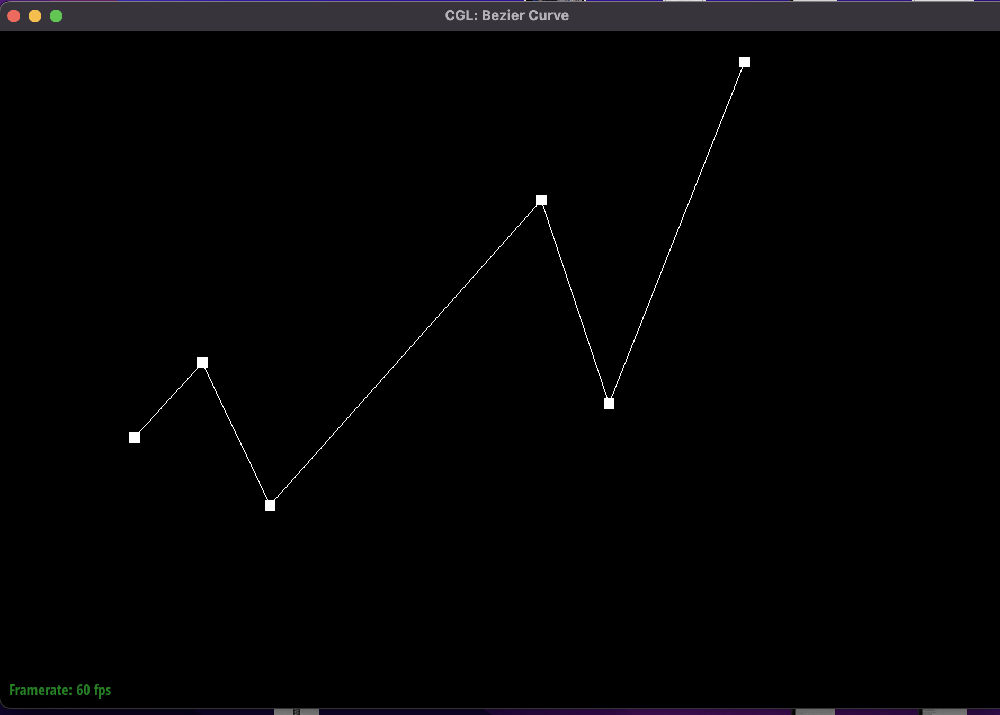
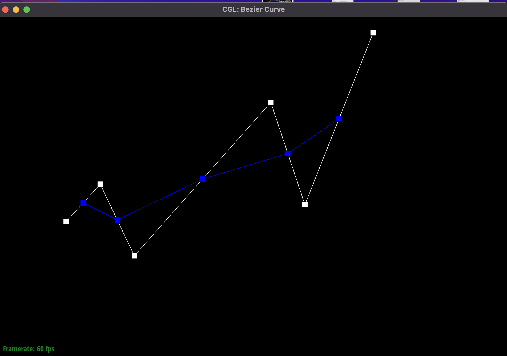
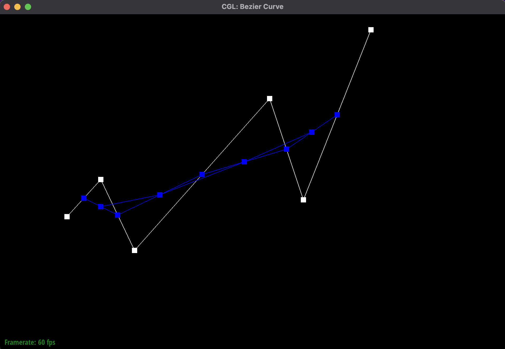
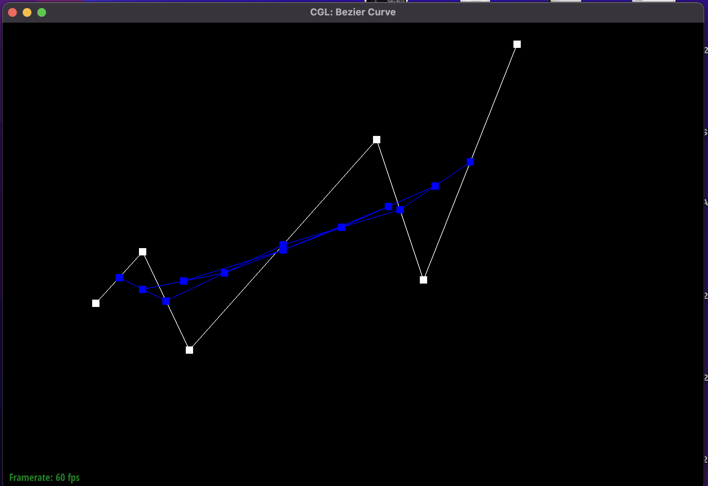
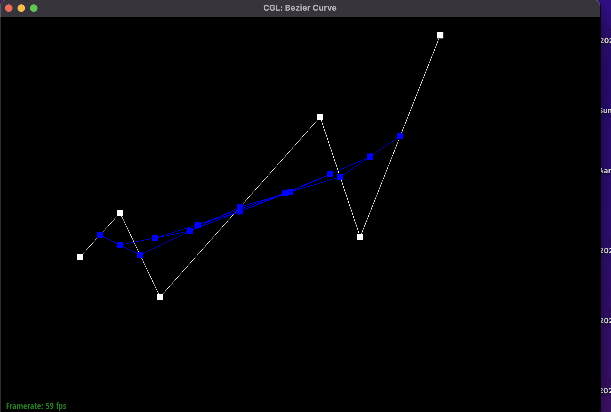
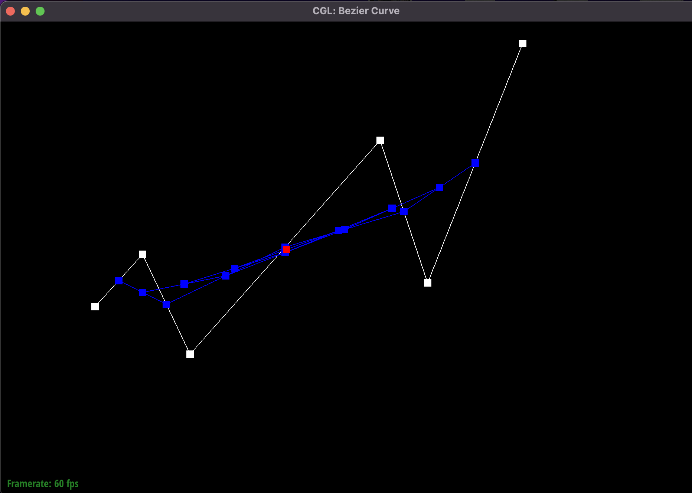
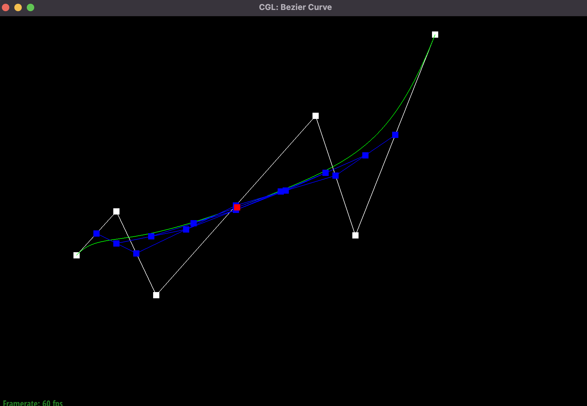
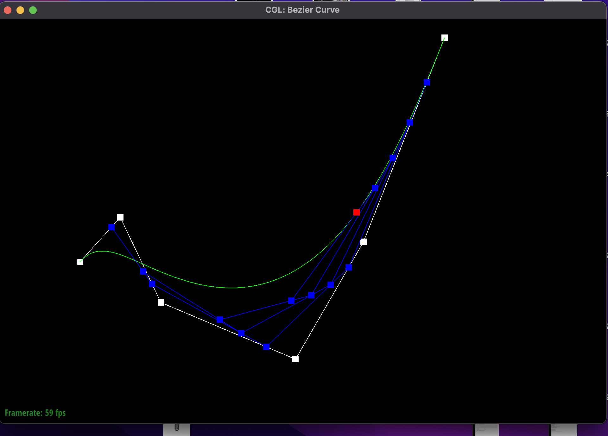

The de Casteljau subdivision algorithm is an algorithm used to evaluate Bézier curves. It works as follows: Using a parameter t (between 0 and 1), the de Casteljau algorithm takes in n control points and outputs n-1 points. This can be done recursively to get a single point that lies on the Bézier curve. This is the point corresponding to the value of t. For different values of t, we get different points on the Bézier curve. The value t can be thought of as a proportionality parameter, in the sense that we divide each line connecting a pair of control points in the ratio 1-t:t. This is the location of the new intermediate point. Therefore, applied recursively, it's clear that we would end up with a single point. The implementation of the algorithm was straightforward. Given the value of t, I simply iterated through consecutive pairs of control points (ex (x1, x2), (x2, x3), (xn-1, xn) etc.). Then, I took a weighted sum, weighting the first point by (1-t) and the second point by t, getting the desired proportion.
This was my .bzc file: 6 0.200 0.400 0.300 0.510 0.400 0.300 0.800 0.750 0.900 0.450 1.100 0.954
|  |  |
|  |  |
|  |  |
|  |  |
The de Casteljau algorithm naturally extends to 2d surfaces with 2 parameters, u and v. In this case, we have a 2d array of control points that define our curve. Conceptually, given an nxn grid of control points, the 2d version of the algorithm attempts to draw n different curves, each having n points. Then using the 1d bezier curve algorithm discussed above with parameter u, we obtain n different points, 1 for each curve. Finally, we use the same algorithm for these n points calculated to calculate a single point using the parameter v. This is the point corresponding to the control point set and the parameters u and v. Now, varying u and v between 0 and 1 independently, we can get multiple points on the bezier surface.
The first thing I wanted to do was traverse the faces that neighbored the vertex using the half-edge datastructure. To do this, I used a simple do while loop as recommended in the hw spec, setting h = h->twin()->next() after every iteration, breaking when h = start (the initial half edge). We then initialize our final normal vector to (0, 0, 0). Next, given the half-edge corresponding to a particular face of a triangle, I got all of its vertex positions since I had to calculate two vectors. More formally, given v0, v1, and v2, I calculated e1 and e2 to be v1-v0 and v2-v0. These are the two vectors corresponding to the triangle with which we can calculate the cross product. The cross product is useful since it gives us the area of the face (which is half of the norm of the cross product) and the unit normal to the corresponding face (which is the unit cross product). We then add the weighted normal (multiplying the area of the face with the unit normal). After doing this for all faces, we finally return the unit version of the normal.
My edge flip algorithm was easy to implement after coming up with a descriptive figure. It started with drawing out all half-edges, vertices, faces, and edges present in the two triangles (including twin edges). Then, I redrew the 2 triangles after the edge flip, keeping note of the movement of all the parameters. After that, it came down to simply implementing this in code, which was straightforward since I had to simply reassign some pointer values.
The debugging process was cumbersome since I thought everything was working fine till I implemented part 6 and noticed bugs. Initially, I thought I could do it without drawing anything (I also fractured my arm so couldn’t really draw with a pen for a week). Because of this, I didn’t conceptualize the shifting edges correctly and ran into several problems, some of which are:
However, after drawing the diagram, coding it up was quite straightforward.
Task 5 was similar to task 4 in that it was quite straightforward to implement after drawing a labeled figure to keep track of which half-edges, vertices, edges, and faces went where. Attached is the drawing of the edge flip, where I labeled all important parameters before and after the edge flip. After drawing this, it simply came down to reassigning some pointer values, which was straightforward.
However, the debugging process was cumbersome in this case as well, since I was only able to spot the bug after implementing task 6. As before, I initially did not (and could not, due to my arm) draw a diagram but just looked at the images of the edge split on the course website and tried to understand where each half-edge, vertex, etc., went. Furthermore, I also forgot to update twin edges like in the previous task, which only became clear to me after drawing everything out. Similarly, my naming convention was conceptually simple as before but led to a lot of incorrect pointer assignments.
However, after drawing things out, everything made sense.
The general algorithm for task 6 was easy to implement given the hints.
The first step was to set the newPosition parameter of each old vertex. To do this, I first had to calculate the position of each neighboring vertex and add them all up. Further, I had to use the degree (n) to calculate the value of u. Each old vertex’s newPosition was set to (1 - n * u) * v->position + u * sumN as mentioned in the hint.
Next, I had to set the new vertex positions. This was done by going through each original edge, getting the four vertex positions relevant (the four vertices a, b, c, d in the two triangles (a, b, c) and (b, c, d) while looking at the edge bc, for example). Then, I weighted the direct vertices by 3/8 and the other two vertices by 1/8.
Next, I went through a list of original edges to split each one. I had to create a separate list to ensure I didn’t split an already split/new edge. Next, as mentioned in the hints, I went through all the edges and for all new ones, if exactly one of its direct vertices was new, I flipped the edge.
Finally, I went through all vertices to set the position to be equal to newPosition.
However, this wasn’t sufficient as nothing was rendering. After some debugging, I figured I never set the isNew parameter to true or false anywhere. After referring to the hints again, I realized that in edge split, I had to set two edges' isNew parameter to True and the other two to False (In the diagram for task 5, the two horizontal edges are new and the two vertical ones are not). Then, I had to make sure that all edges that already existed were not considered new. I did this in the code for task 6 where I iterated through all vertices and edges. In these loops, I simply set v->isNew and e->isNew to False.
Here the subdivision increases the number of triangles, making each one smaller and therefore adding more detail. Further, all boundaries are much smoother since we have smaller triangles for fine-grained details. While the image of the cow with 0 subdivisions looks quite coarse the one with 3 subdivisions looks like much smoother, with smoother curves and boundaries. Further, it is possible to smoothen the object by pre-splitting edges at the boundaries. Since we create more triangles in these regions, we can get smoother edges and corners.
Images of the cube after subdivisions. Here, we can notice that there is some evident asymmetry on each face.
I performed edge splits on each face of the cube to make all faces symmetric (unlike before). The results:
This mesh is more symmetric than the previous one. Further, since I pre-split some edges, it's clear that this mesh is slightly more round and smooth than the previous cube mesh.
The asymmetry occurs due to the following reasons: